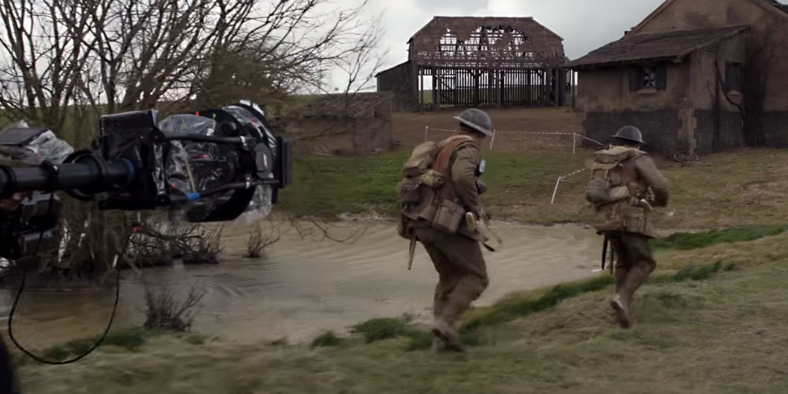
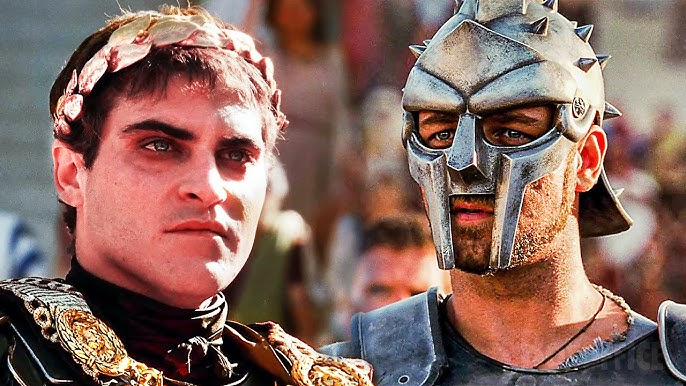
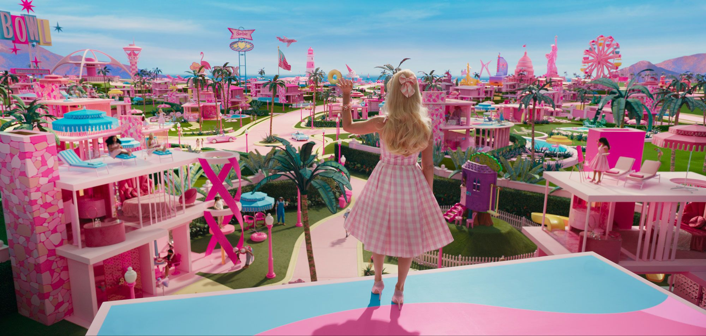

| INICIO | COMPONENTES | CALIFICACION | GENEROS | TOP MEJORES | TOP FAVORITAS |
�쮺칩mo se compone una pel칤cula?
|
Guion: El guion es el documento escrito que contiene la historia, di치logos y descripciones de las | |
|
Direccion: El director tiene la vision creativa general del proyecto. Toma decisiones sobre | |
|  |
Cinematografia (Direccion de Fotografia): El director de fotografia o cinematografo se encarga |
|  |
Actuacion: Los actores interpretan a los personajes, basandose en el guion y en las indicaciones |
|  |
Escenografia: Es la creacion fisica o digital de los ambientes en los que se desarrollan las |

|
Vestuario y Maquillaje: El equipo de vestuario diseña y selecciona las prendas que usaran los |
|
Edicion (Montaje): El editor selecciona y ordena las tomas grabadas para dar coherencia a la | |

|
Efectos Visuales (VFX): Aqui se crean efectos generados por computadora o manipulacion |

|
Musica y Banda Sonora: El compositor crea una banda sonora que acompaña las emociones de la |